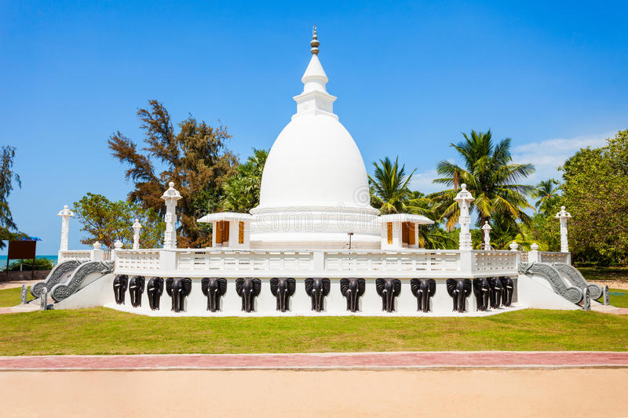

Dambakola Patuna Temple
Dambakola Patuna or Jambukola Patuna is an ancient port in the north
of Jaffna
which was used during pre christian times. After Arahath
Mahinda brought Bhuddhism to
Sri Lanka in 250BC, his sister,
Theri Sanghamitta arrived in Sri Lanka with a Sacred
Bo Sapling one
year later to this port. The temple Samudda-panasala
( Jambukola Viharaya)
was built commemorating the arrival of the Bo
sapling by King Devanampriya Tissa (250-210 BC).
"
style="width:100%" onmouseover="myFunction(this);" >

![<b>Nallur Kandasamy Kovil </b>
<br><p>Nallur Kandasamy Kovil is Jaffna's premier place of Hindu worship. <br>Nallur
Kandasamy Kovil characterised by a golden arch and<br> elaborate gopuram attracts
hundreds of pilgrims and worshippers. <br>The present building of the kovil goes
back to the eighteenth century.<br> The original temple said to go back to the times
of the Tamil kings was <br>destroyed by the Portuguese in 1620 and stood on the site
<br> presently occupied by St. James Church about a quarter mile <br>from the present temple.
<br><br><br><br></p>](Nallur.jpg)